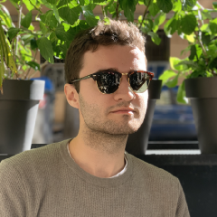
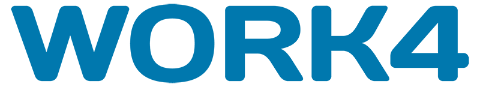
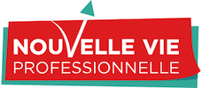
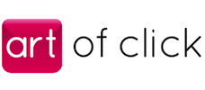

Charles Breton
Full-stack Developer
business school graduate, product manager, full-stack developer, philosophy & social sciences student. I enjoy discussing the future of society through tech
My Projects
|  |
Work4
|
|  |
nouvellevieproI managed the creation and launch of an innovative web platform from scratch to ease career transitioning, involving market study and analytics, strategic reflection and business plan redaction, financial research as well as UX design, wireframing, SEO and webmarketing
|
|  |
Art of Click
|